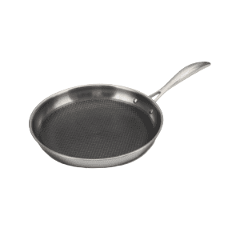
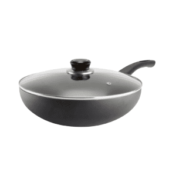

SARTÉN TITÁN ACERO
INOXIDABLE ANTIADHERENTE N°20

Características
- Producto manufacturado en acero inoxidable con recubrimiento antiadherente al interior de color negro con acabado tipo panal.
- Antiadherente reforzado que brinda mayor durabilidad y alta resistencia a rayaduras.
- El recubrimiento antiadherente evita que los alimentos se peguen facilitando su limpieza.
- Su triple capa (acero inoxidable, aluminio y acero inoxidable) y fondo difusor, garantiza una excelente distribución del calor, proporcionando una cocción más rápida y ahorro de energía.
Tipo de Cocina:
- Gas
- Eléctrica
- Vitrocerámica
- Inducción
SARTÉN WOK
ANTIADHERENTE Nº26

Características
- Sartén 26cm de diametro
- Manufacturado en aluminio antiadherente
- Color Negro
- Tapa de vidrio templado con borde protector en acero inoxidable
Tipo de Cocina:
- Gas
- Eléctrica
- Vitrocerámica.